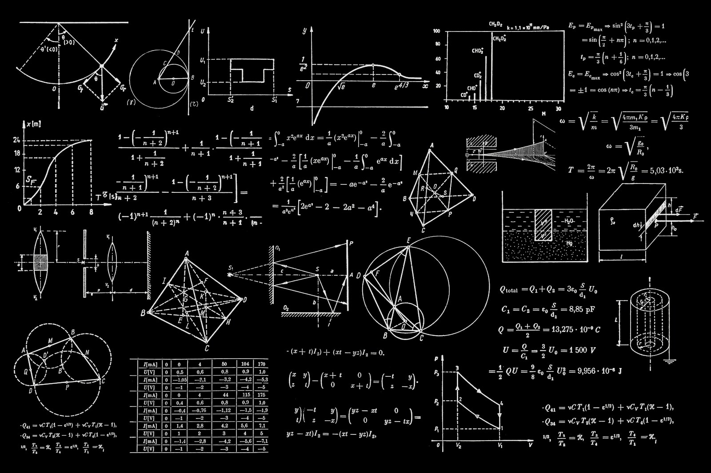

围绕图像任务，探索视觉应用。
从实际任务出发，明确每一项工作的范围与连接方式。
看见内容
根据业务目标区分图像类别、区域或要素，梳理可标注与可验证的对象。
理解任务
将视觉输出转为界面提示、检索线索或流程状态，避免结果停留在单次演示。
连接应用
提供图像处理与业务功能之间的连接，整理调用方式与异常样本反馈机制。

开始之前，你可能想知道。
样本越多就一定越好吗？
样本需要覆盖实际使用条件，数量之外还要关注代表性与标注一致性。
可以先做小范围验证吗？
可以从单一任务和明确样本集开始，验证后再讨论应用范围。
从样本整理，到应用联动。
整理样本
明确画面条件、对象范围和样本使用方式。
对照验证
观察不同条件下的输出，记录误差与适用边界。
联动功能
把识别结果放进真实任务中验证操作体验。